Part 4
4.BGM: Okay, Everyone!

Yuri seems the most experienced, so I should start with her. I can trust her opinion to be fair.
Not entirely sure what youre basing that on but alright.
As Yuri reads the poem, I notice her eyes lighten. Yuri smiles dreamily, as if that's a rare opportunity for her. Which itself is kind of funny...after all, isn't this supposed to be a literature club?
 : ...Exceptional."
: ...Exceptional." : Eh? What was that?": ...? D-Did I say that out loud...?"
: Eh? What was that?": ...? D-Did I say that out loud...?"Yuri first covers her mouth, but then ends up covering her whole face.
: I...!": Uu... (He's going to hate me...)"I have no idea why she thinks this considering her next few lines.
: Um...you really didn't do anything wrong, Yuri...": Eh...? That's...I-I guess you're right...what am I getting so nervous for? A-Ahaha..."Nervous is an understatement when it comes to Yuri. Shes like a mortified chihuahua at pretty much all times.
Yuri takes a breath.
: So..."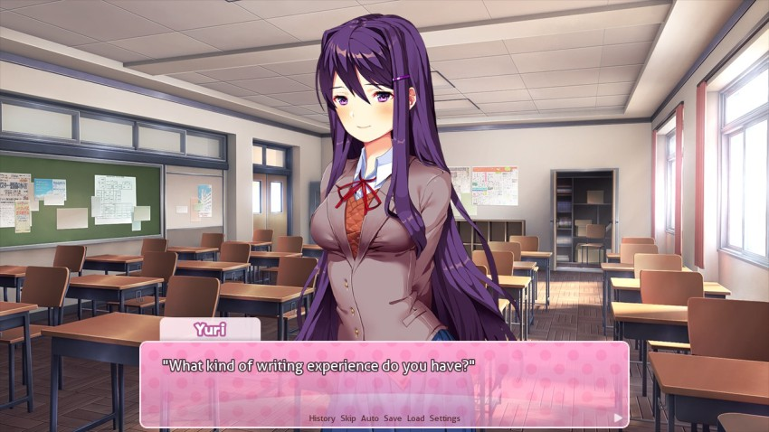
: Your use of imagery and metaphors indicates you've written a lot of poetry before."I asked the internet and they told me to make you sad.
: Really...? Wow, that's a huge compliment coming from you. This is actually my first time, really.": Huh...?"Yuri stares at me blankly, then looks at my poem again.
: ...Well, I know that! I just meant...u-um..."Yuri trails off, unable to find an excuse. She traces her finger along the words in the poem, as if breaking it down more thoroughly.
: ...Yeah. Okay. This is the reason I was able to tell. It's just that there are specific writing habits that are usually typical of new writers. And having been through that myself, I kind of learned to pick up on them. I think the most noticeable thing I recognize in new writers is that they try to make their style very deliberate. In other words, they tend to pick a writing style separate from the topic matter, and they form-fit the two together. The end result is that both the style and the expressiveness are weakened."I dont know a lot about poetry, but this is pretty typical in all forms of writing, so shes pretty spot-on here.
Once Yuri finds her train of thought, it's as if her demeanor totally changes. Her stammering is completely gone, and she sounds like an expert.
 : There are so many different skills and techniques that go into writing even a simple poem. Not just finding them and building them, but getting them to work together is probably the most challenging part. It might take you some time, but it all comes with practice, and learning by example, and trying new things. I also hope that everyone else in the club gives you valuable feedback.": Natsuki can be a little bit biased, though...": Biased? How?"
: There are so many different skills and techniques that go into writing even a simple poem. Not just finding them and building them, but getting them to work together is probably the most challenging part. It might take you some time, but it all comes with practice, and learning by example, and trying new things. I also hope that everyone else in the club gives you valuable feedback.": Natsuki can be a little bit biased, though...": Biased? How?"Really, Mitayo? Have you MET Natsuki?
: U-Um...well...never mind. I shouldn't be talking about people like that...sorry...": It's fine."I'm not sure if Yuri is apologizing to herself, to me, or to Natsuki.
: Do you mind if I read your poem now?": Please do! I'd love to share my thought process behind it..."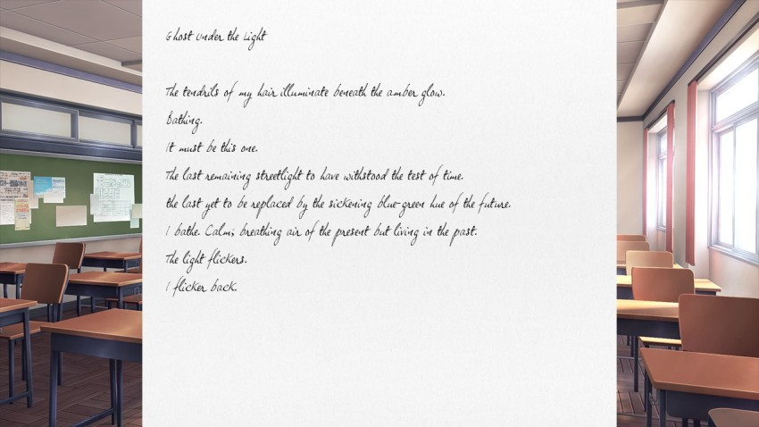
BGM: Okay, Everyone! (Yuri) **New!** (Yes, all of the girls have a version of Okay, Everyone! that only plays while their poems are onscreen. Its a nice touch.)
Poem impressions: I may just have old, bad eyes or I just dont read enough cursive, but I cant read this at all. Here.
quote:
Ghost Under the Light
The tendrils of my hair illuminate beneath the amber glow.
Bathing.
It must be this one.
The last remaining streetlight to have withstood the test of time.
the last yet to be replaced by the sickening blue-green hue of the future.
I bathe. Calm; breathing air of the present but living in the past.
The light flickers.
I flicker back.
There we go. Anyways, I like the cadence of this poem but Yuris poetry tends to be a little too heavy-handed and gothic for my tastes. Im a Lit major, not a poetry major and I dont particularly like most poetry, to be honest mostly because most poems end up looking like what Yuri just wrote. No disrespect to them or her, but theyre just generally not my taste.
BGM: Okay, Everyone!
: ...I'm sorry I have such terrible handwriting!"Its not terrible, its actually nice. I just cant read it.
: What?? I wasn't thinking that at all...": But it took you a long time to read...": Ah--well, I just don't read script very often...I actually think your handwriting is pretty.": Eh? That's...a relief...": Also, I liked the poem. Even though it's short, it was really descriptive."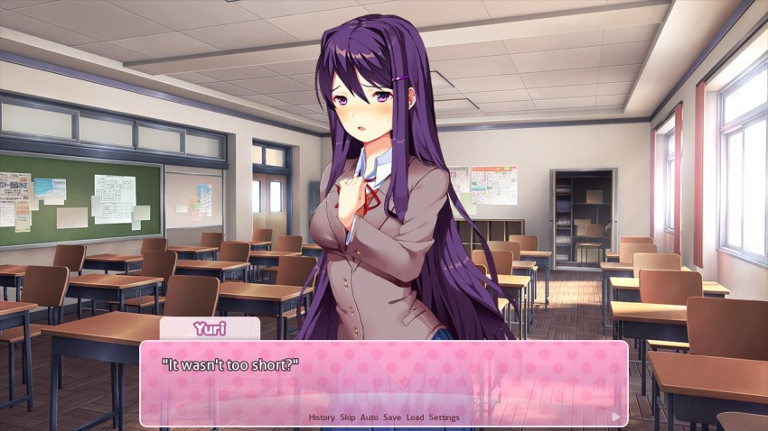
: I usually write longer poems..."Shes not lying and I wish she were.
: Not at all.": I'm...really glad you like it. I'll be honest...since it's our first time sharing, I wanted to write something a little more mild. Something easy to digest, I suppose.": Are you into ghosts, Yuri?": Huhu. Actually, the story isn't about a ghost at all, Mitayo.": Really? I must have totally missed the point..."That makes two of us.
: Well, I suppose you did only glance over it, after all...but remember that poets often express their own thoughts, feelings, and experiences in their work. They usually do more than tell a simple story, or paint a picture. In this case, perhaps the subject of the poem is only being symbolically compared to a ghost. Lingering in her last remaining place of comfort, unable to let go of the past. And soon to be left with nothing..."More than anyone else in the group with the exception of maybe Monika Yuri seems to know what shes talking about the most. If it werent for her crippling shyness and social anxiety, shed probably be a better fit for president of the Literature club.
: ...That's a lot more solemn, putting it that way. I hadn't even thought of that...that's impressive.": Eh? I-It's nothing, really! Yours was impressive too, so...": Nah...if anything, I could probably learn a thing or two from you.": ...You think so?": Yeah, of course.": Ah...you know..."
You dont say.
: But in the end, I enjoyed it. I'm going to keep doing my best for you, Mitayo.": Ah...me too.": It's nothing, really...well...it makes me happy that you think that. Just remember that it won't be long before you pick up on these things, too.": Yeah, maybe you're right. I guess I'll have to keep trying.": I'm counting on you."Alright, Ill chalk that up as a success. Lets see if we can go two for two.
: ...?"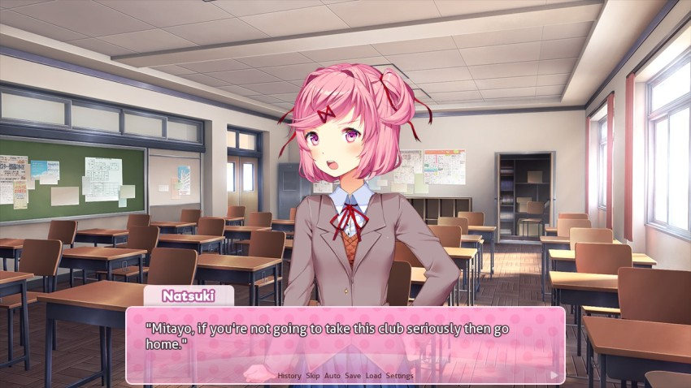
Hahaha, wow. Salty right out of the gate. Never change, you little viper.
: W-What?? Harsh..." : What, you expect me to believe that you actually put effort into this? Do you think Im stupid?: I'm not a writer! Maybe it's not very good, but yeah, I did put in effort. We all start somewhere, right?" If you're still proud of the first poem you ever wrote, then I'd like to read it."
: What, you expect me to believe that you actually put effort into this? Do you think Im stupid?: I'm not a writer! Maybe it's not very good, but yeah, I did put in effort. We all start somewhere, right?" If you're still proud of the first poem you ever wrote, then I'd like to read it."One of the first things I ever wrote was a Star Ocean 2 fanfiction and it is just godawful. Its still up on FF.net as mostly a message to myself on how horrible writing can be if I let it.
: !!": Painful to think about?": ..."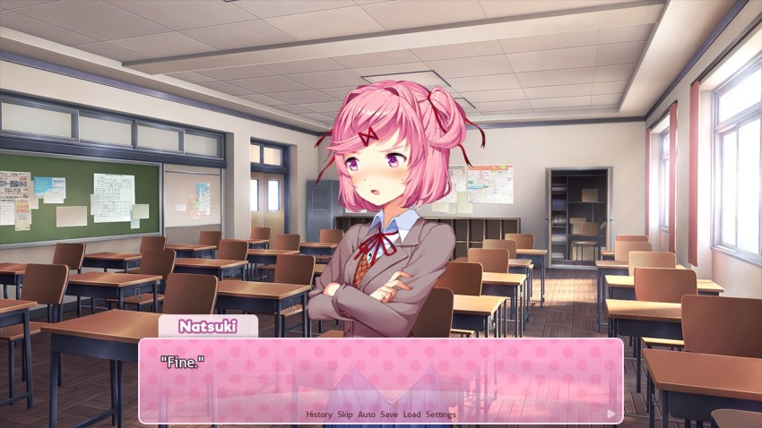
: Well, sorry. You'll get better, anyway. I'd tell you what to improve, but you're better off just trying again.": Fair enough...well, to each their own, I guess.": Anyway, I guess I gotta share mine now...knowing you, you'll probably think it's stupid."BGM: Okay, Everyone! (Natsuki) **New!**
Poem impressions: I like this. Were not going to hear it because Natsuki straight up hates our poem, but Monika says that Natsukis style is similar to Shel Silverstein, and I can see it. The simplistic style helps drive home harder points then you would expect from the basic prose. I also appreciate that Natsuki writes in a script I can read easily that cant be said about all of the girls.
BGM: Okay, Everyone!
: Yeah...I told you that you weren't gonna like it.": I like it.": What? Just be honest!": I am. Why are you so convinced that I wouldn't like it?": Well--because!" : So people don't even take my writing seriously."
: So people don't even take my writing seriously."Considering her poem, its pretty plain why she thinks that were terrible we opted for something much heavier than her style and it very clearly did NOT suit her.
: But isn't the point of poems for people to express themselves? Your writing style wouldn't make your message any less valid.": Yes! Exactly! I like when it's easy to read, but it hits you hard. Like in this poem. Seeing everyone around you do great things can be really disheartening...so I decided to write about it.": Yeah, I understand.": But the other nice thing about simple writing is that it puts more weight on the wordplay. Like I set up for a rhyme at the end, but then made it fall flat on purpose. It helps bring out the feeling in the last line.": So you did...I guess more went into it than I realized.": That's what it means to be a pro!"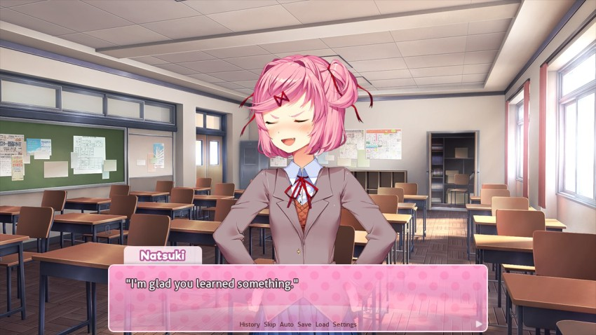
: Didn't expect that from the youngest one here, did you?": Yeah...guess not."I decide to humor her with that last comment. I don't really care how old everyone is, but if Natsuki is feeling proud then I won't take that away from her.
Theres definitely some Napoleon syndrome there.
Alright, were 1-1 on people who think our poem is good or not. What does the childhood friend think of our angst?
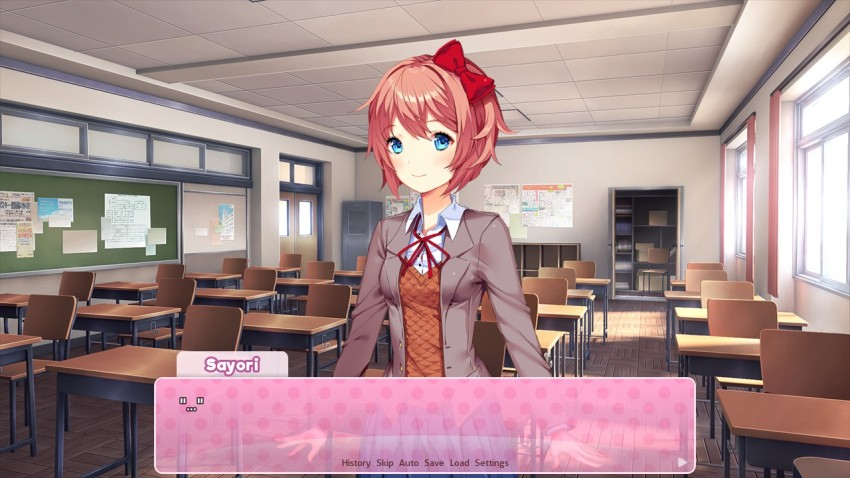
 : This is a good poem, Mitayo! Are you sure it's your first time?"
: This is a good poem, Mitayo! Are you sure it's your first time?"Phrasing.
: Of course...it's not that good. Am I the kind of guy who would be writing poems in his spare time?": Ehehe, I guess you're right~ but that's why it impressed me! Well, to be honest...I was afraid that you wouldn't do it seriously or that you wouldn't write one at all. I'm really happy just that you wrote one."The faith in me is inspiring, Sayori.
: It just reminds me of how you're really a part of the club now~"(Not to mention the fact that I'm standing in front of you in the clubroom...?)
: Er...well, of course. I'm not really into it yet, but that doesn't mean I'll break my promise.": See? It's like I said before, Mitayo...deep down, you're not selfish at all, you know? Trying new things like this for other people...that's something that only really good people do!": Thanks...Sayori."...I'm not sure if Sayori sees the full picture of my motive here. Then again...I can't deny that she's part of the reason I joined. Knowing how much this means to her and all...
I originally joined for cupcakes but now Im here for girls. Poetry is just a benefit? Consequence? Depends on the point of view, I suppose.
: Yeah. And I'm gonna make sure you have lots of fun here, okay? That will be my way of thanking you~": Alright, I'm going to hold you to that, then.": Yay~! Now, you'll read my poem too, right? Don't worry, I'm really bad at this. Ehehe..."I really like Sayori. She really strives to see to see the optimistic side of things.
: We'll see about that."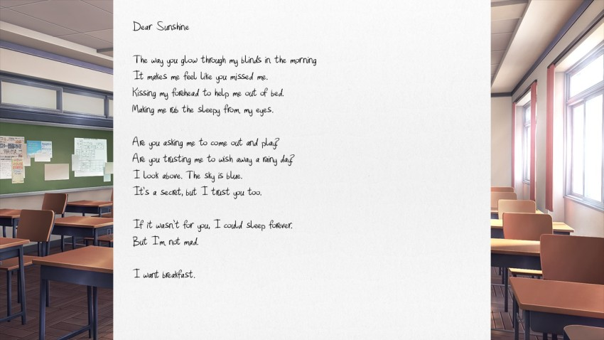
BGM: Okay, Everyone! (Sayori) **New!**
Poem impressions: See, now this one I like. Light, easy language and a concept that isnt doused in symbolism.
BGM: Okay, Everyone!
: Sayori...this is just a guess, but...did you wait until this morning to write this?"Wow, super rude.
: No! J-Just a little bit!"but apparently its true, so I guess I cant fault Mitayo too much. Still rude, though.
: You can't answer 'just a little bit' to a yes or no question...": I forgot to do it last night...": Well, at least that makes me feel a little better about myself...": Don't be mean!"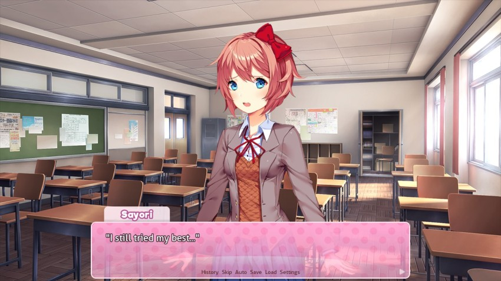
: Ah, yeah...I didn't mean to say that it was a bad poem. It came out nice...or, how should I put it
it sounds just like you."Im not saying its BAD, Im just saying it looks like you wrote it in five minutes. Its a compliment, really!
: Really?": Yeah. Especially that last line...": I made eggs and toast!": Even though you were late to school...?"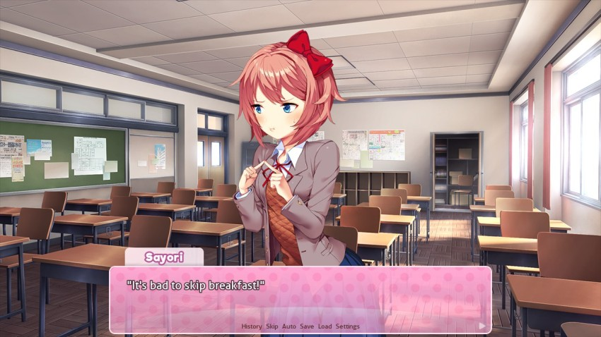
: I get all cranky..."This is an important lesson to remember. Breakfast is important, kids!
: Well, I guess there's no point in arguing...anyway, thanks for showing me.": Ehehe~ this was so much fun. Monika's the best!"She really is.
: Ah...yeah.": But next time, I won't forget. And I'm gonna write the best poem ever!": Well, I guess I look forward to it."Alright, three down. Now, just Monika remains.
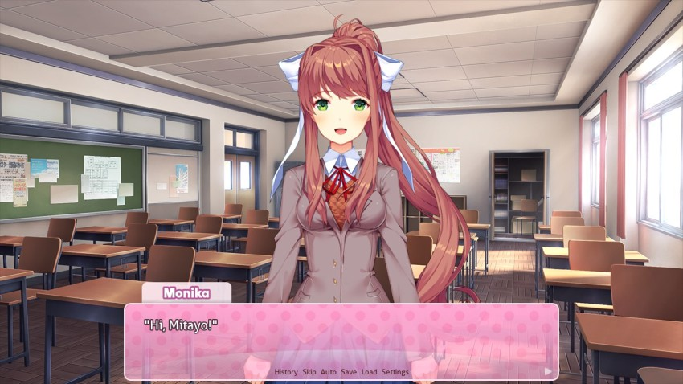
 : Having a good time so far?": Ah...yeah.": Good! Glad to hear it! By the way, since you're new and everything...if you ever have any suggestions for the club, like new activities, or things we can do better...I'm always listening! Don't be afraid to bring things up, okay?": Alright...I'll keep that in mind."
: Having a good time so far?": Ah...yeah.": Good! Glad to hear it! By the way, since you're new and everything...if you ever have any suggestions for the club, like new activities, or things we can do better...I'm always listening! Don't be afraid to bring things up, okay?": Alright...I'll keep that in mind."Of course I'll be afraid to bring things up. I'm much better off just going with the flow until I'm more settled in.
: Anyway...want to share your poem with me?": It's kind of embarrassing, but I guess I have to.": Ahahaha!"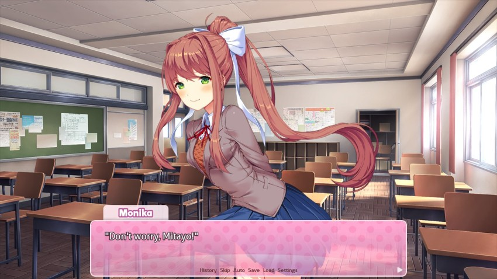
: We're all a little embarrassed today, you know? But it's that sort of barrier that we'll all learn to get past soon.": Yeah, that's true."I hand Monika my poem.
: Great job, Mitayo! I was going 'Ooh' in my head while reading it. It's really metaphorical! I'm not sure why, but I didn't expect you to go for something so deep. I guess I underestimated you!"Thank the Goons. Im a firm group B supporter.
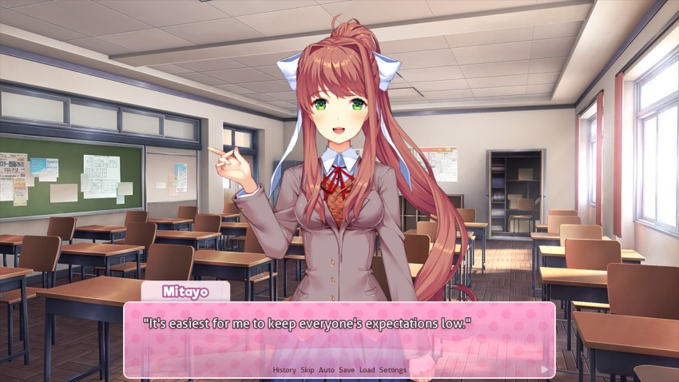
This is also an important life lesson.
: That way, it always counts when I put in some effort.": Ahaha! That's not very fair! Well, I guess it worked, anyway. You know that Yuri likes this kind of writing, right? Writing that's full of imagery and symbolism. Unlike Sayori, who likes using simple and direct words to describe happiness and sadness...Yuri likes it when readers are left to derive their own meaning out of it. It's very challenging to write like that effectively. Both allowing people to get something out of it just by feel...or letting them deeply analyze all of the nuances."The problem that can occur with Yuris writing is that it can stretch too far into pretentious, though. Not saying that shes reached that point, but its not too far off.
: It can take years of practice, which I'm assuming Yuri has at this point. I never really asked, though...": I'm sure I'm nowhere near her level yet.": Don't worry so much about that! You do your own thing."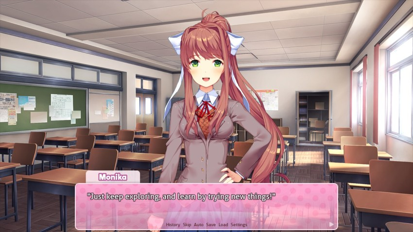
: I'm sure I'll end up trying different things a lot. It could take a while before I feel comfortable doing this.": That's okay! I'd love to see you try new things. That's the best way to find the kind of style that suits you. Everyone else might be a little bit biased toward their own kinds of styles...but I'll always help you find what suits you the most! So don't force yourself to write the way everyone else wants you to write. It's not like you have to worry about impressing them or anything.": Ahaha!": Ahaha..."Ahaha! Why are we laughing?
: Anyway, do you want to read my poem now? Don't worry, I'm not very good...": You sound pretty confident for someone who claims to not be very good.": Well...that's 'cause I have to sound confident. That doesn't mean I always feel that way, you know?"As mentioned in previous updates, Monikas the cool girl this is an interesting insight into her character. She always has to feel on but at times, it could be little more than a mask.
: I see...well, let's read it, then."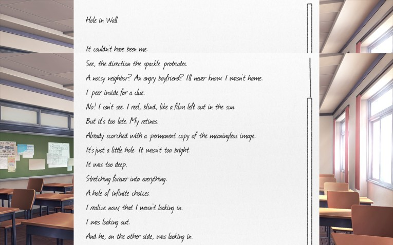
BGM: Okay, Everyone! (Monika)
Poem impressions: Monika, more than any of the other girls, tends to write long poetry that wont easily fit onto one screenshot. If my fantastic photoshop skills arent up to par, heres a slightly easier to read version.
quote:
Hole in the Wall
It couldn't have been me.
See, the direction the spackle protrudes.
A noisy neighbor? An angry boyfriend? I'll never know. I wasn't home.
I peer inside for a clue.
No! I can't see. I reel, blind, like a film left out in the sun.
But it's too late. My retinas.
Already scorched with a permanent copy of the meaningless image.
It's just a little hole. It wasn't too bright.
It was too deep.
Stretching forever into everything.
A hole of infinite choices.
I realize now, that I wasn't looking in.
I was looking out.
And he, on the other side, was looking in.
Anyways, I like Monikas poetry. It flows a lot more like normal language to a cadence than a regular poetry. It makes it seem more natural more real.
BGM: Okay, Everyone!
: So...what do you think?": Hmm...it's very...freeform, if that's what you call it. Sorry, I'm not really the right person to ask for feedback...": Ahaha. It's okay. Yeah, that kind of style has gotten pretty popular nowadays. That is, a lot of poems have been putting emphasis on the timing between words and lines. When performed out loud, it can be really powerful."Most of these poems and all poetry in general, to be honest are stronger when performed. With limited exceptions, actually reading poetry lessens the impact of the piece.
: What was the inspiration behind this one?": Ah...well, I'm not sure if I know how to put it..." : It's been influencing my poems a bit.": An epiphany?": Yeah...something like that. I'm kind of nervous to talk about deep stuff like that, because it's kind of coming on strongly...maybe after everyone is better friends with each other. Anyway...": Here's Monika's Writing Tip of the Day!": Sometimes when you're writing a poem - or a story - your brain gets too fixated on a specific point...if you try so hard to make it perfect, then you'll never make any progress. Just force yourself to get something down on the paper, and tidy it up later! Another way to think about it is this: If you keep your pen in the same spot for too long, you'll just get a big dark puddle of ink. So just move your hand, and go with the flow!": ...That's my advice for today!"
: It's been influencing my poems a bit.": An epiphany?": Yeah...something like that. I'm kind of nervous to talk about deep stuff like that, because it's kind of coming on strongly...maybe after everyone is better friends with each other. Anyway...": Here's Monika's Writing Tip of the Day!": Sometimes when you're writing a poem - or a story - your brain gets too fixated on a specific point...if you try so hard to make it perfect, then you'll never make any progress. Just force yourself to get something down on the paper, and tidy it up later! Another way to think about it is this: If you keep your pen in the same spot for too long, you'll just get a big dark puddle of ink. So just move your hand, and go with the flow!": ...That's my advice for today!"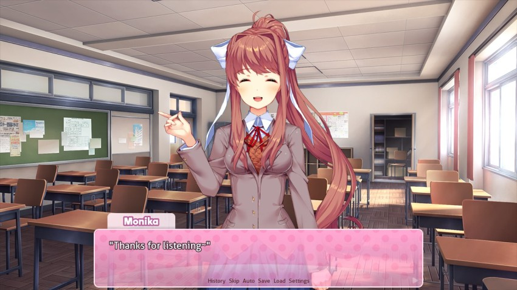
Again, this is more worthwhile writing advice in general.
Anyways, thats everyone. Anyone poetryd out, yet? I certainly hope not!
BGM: Ohayou Sayori!
: Phew..."I guess that's everyone. I glance around the room. That was a little more stressful than I anticipated. It's as if everyone is judging me for my mediocre writing abilities...Even if they're just being nice, there's no way my poems can stand up to theirs. This is a literature club, after all. I sigh - I guess that's what I ended up getting myself into. Across the room, Sayori and Monika are happily chatting. My eyes land on Yuri and Natsuki.
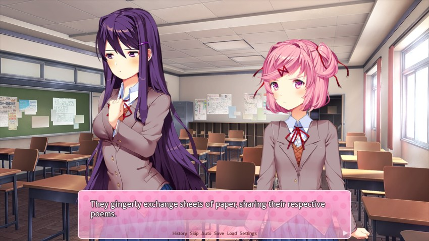
As they read in tandem, I watch each of their expressions change. Natsuki's eyebrows furrow in frustration. Meanwhile, Yuri smiles sadly.
: (What's with this language...?)": Eh? Um...did you say something?": Oh, it's nothing."Natsuki dismissively returns the poem to the desk with one hand.
: I guess you could say it's fancy."This pile of shit sure does sparkle.
: Ah-- Thanks..." : Cute? Did you completely miss the symbolism or something? It's clearly about the feeling of giving up. How can that be cute?"
: Cute? Did you completely miss the symbolism or something? It's clearly about the feeling of giving up. How can that be cute?"Uh oh, the hackles are officially up.
: I-I know that! I just meant...the language, I guess. I was trying to say something nice...": Eh? You mean you have to try that hard to come up with something nice to say? Thanks, but it really didn't come out nice at all!": Um..."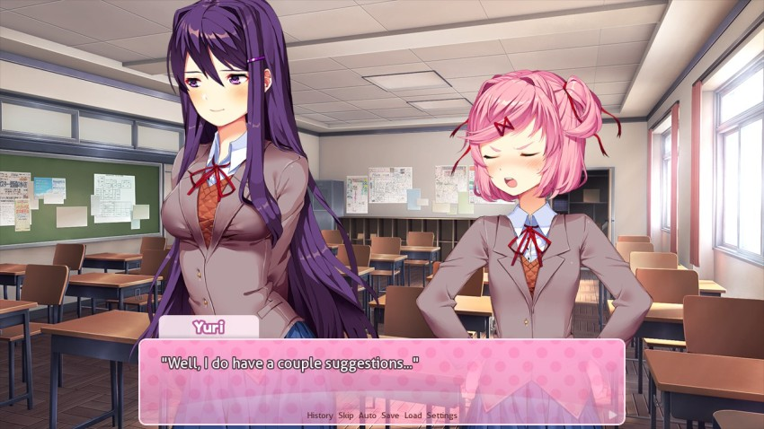
: Hmph. If I was looking for suggestions, I would have asked someone who actually liked it. Which people did, by the way. Sayori liked it. And Mitayo did, too! So based on that, I'll gladly give you some suggestions of my own. First of all--": Excuse me...I appreciate the offer, but I've spent a long time establishing my writing style. I don't expect it to change anytime soon, unless of course I come across something particularly inspiring. Which I haven't yet."These two sure are getting heated over poetry.
Though, to be fair, its more than that. This is about style in general, and theyre obviously interested in writing or they wouldnt be in the Literature Club to begin with.
 : And Mitayo liked my poem too, you know. He even told me he was impressed by it."
: And Mitayo liked my poem too, you know. He even told me he was impressed by it."Eh.
Natsuki suddenly stands up.
: Oh? I didn't realize you were so invested in trying to impress our new member, Yuri."BGM: Poem Panic! **New**
Please leave me out of this.

As an aside, if youre not already listening to the BGM tracks, listen to this one. Its ridiculous and adorable and reminds me a little of the Darkseed 2 circus theme.
: E-Eh?! That's not what I...! Uu, you...You're just..."Yuri stands up as well.
 : Huh! And how do you know he didn't appreciate my advice more?" Are you that full of yourself?": I...! No...if I was full of myself...I would deliberately go out of my way to make everything I do overly cutesy!"
: Huh! And how do you know he didn't appreciate my advice more?" Are you that full of yourself?": I...! No...if I was full of myself...I would deliberately go out of my way to make everything I do overly cutesy!"Youve got to be seriously antagonistic if youre able to get Yuri yelling at you.
: Uuuuuu...!"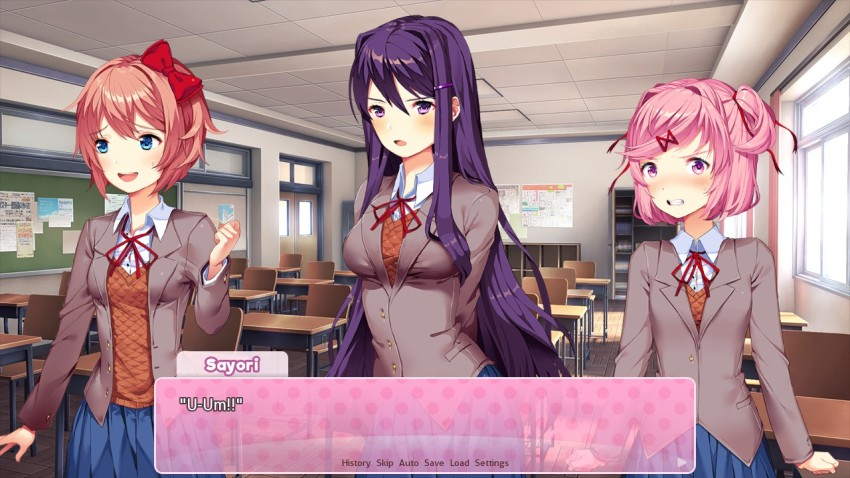
: Is everyone okay...?": Well, you know what?! I wasn't the one whose boobs magically grew a size bigger as soon as Mitayo started showing up!!" : N-Natsuki!!": Um, Natsuki, that's a little--"
: N-Natsuki!!": Um, Natsuki, that's a little--"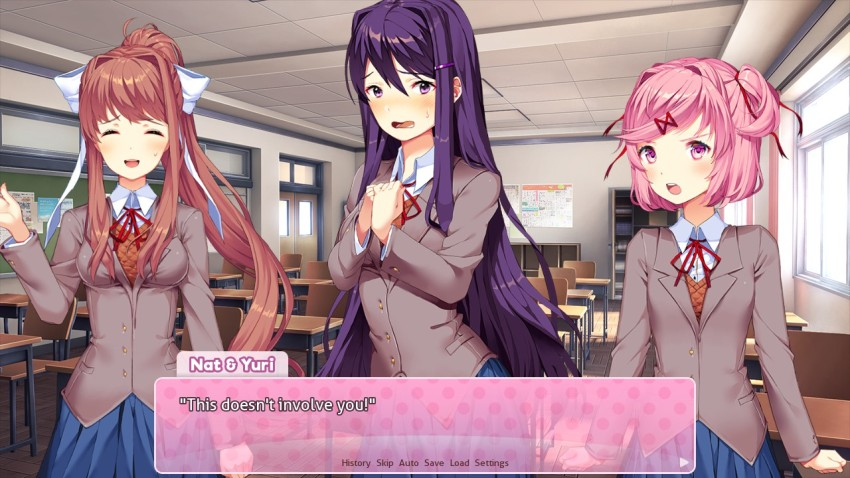
: I-I don't like fighting, guys...!"Suddenly, both girls turn towards me, as if they just noticed I was standing there.
: Mitayo...! She-- She's just trying to make me look bad...!": That's not true! She started it!"NUH-UH, YOU STARTED IT
: If she could get over herself and learn to appreciate that simple writing is more effective...then this wouldn't have happened in the first place!"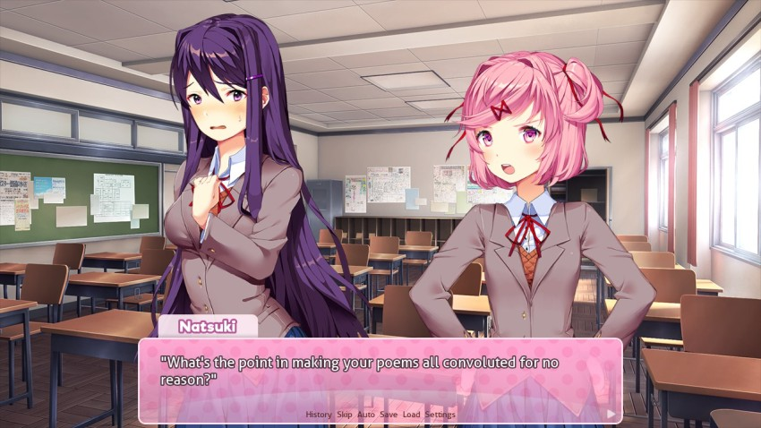
: The meaning should jump out at the reader, not force them to have to figure it out. Help me explain that to her, Mitayo!": W-Wait! There's a reason we have so many deep and expressive words in our language! It's the only way to convey complex feelings and meaning the most effectively. Avoiding them is not only unnecessarily limiting yourself...it's also a waste! You understand that, right, Mitayo?": Um...!" : Well??": ..."How did I get dragged into this in the first place?! It's not like I know anything about writing...but whomever I agree with, they'll probably think more highly of me!
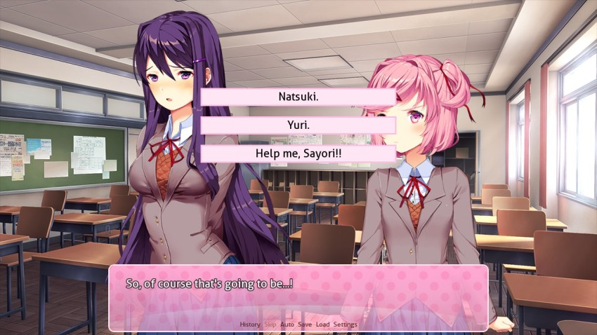
Frankly, I think that theyre both wrong, but this fortunately isnt my decision. Its yours!
VOTE TIME who should we side with?
*Natsuki (Simple words and ideas have a bigger impact)
*Yuri (Expressive language provokes stronger feelings)
*Sayori (stop fighting guys
)